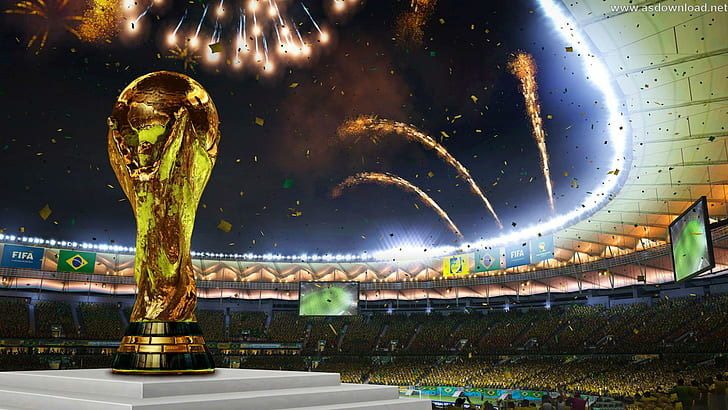
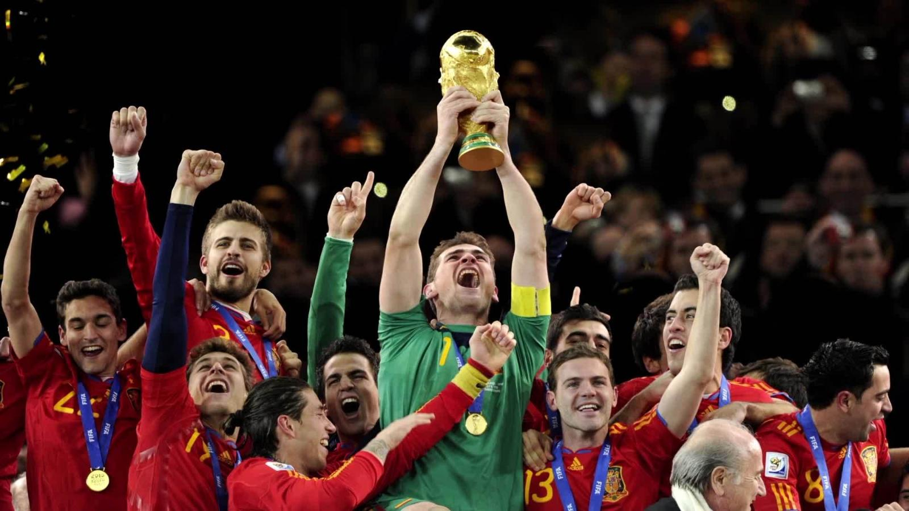
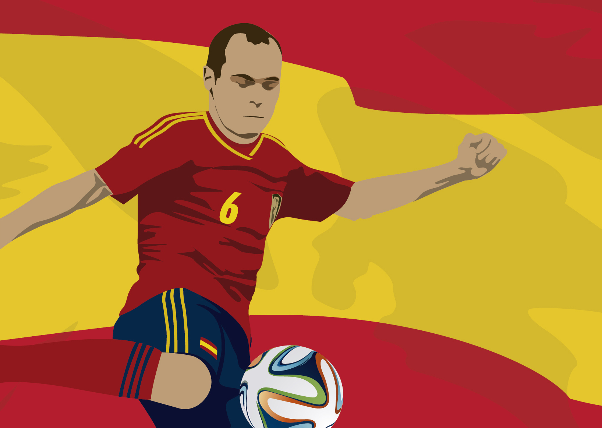
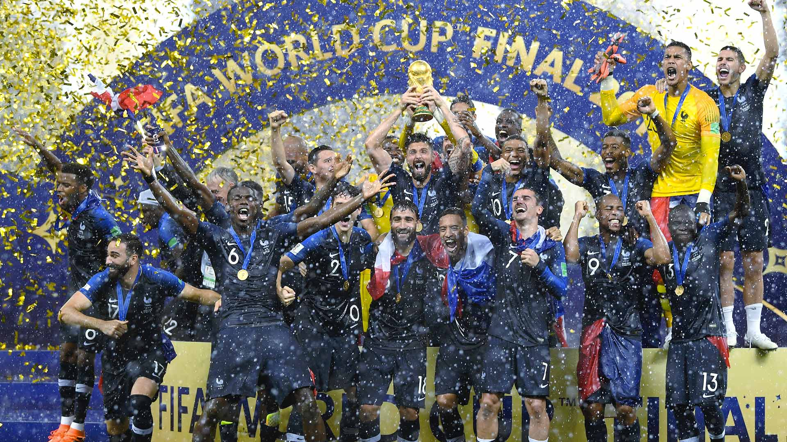
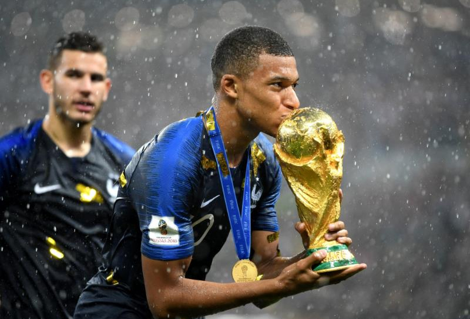

¿Qué es el Mundial?
El Mundial es un eventu futbolístico que se disputa cada 4 años, excepto en 1942 y 1946 debido a la Segunda Guerra Mundial. Cada país hace una convocatoría con sus 22 mejores jugadores y las 32 mejores selecciones del mundo juegan una fase de grupos y posteriormente unos octavios de final, cuartos de final, semifinales, y por último la gran final. Los 32 equipos que juegan este evento son aquellos que jueguen un mini torneo clasificatorio entre regiones.
Mayores Estadísticas del Mundial
Máximos goleadores
1. Miroslav Klose (Alemania) con 16 goles en 24 partidos.
2. Ronaldo Nazario (Brasil) con 15 goles en 19 partidos.
3. Gerard Müller (Alemania) con 14 goles en 13 partidos.
4. Just Fontaine (Francia) con 13 goles en 6 partidos.
5. Pelé (Brasil) con 12 goles en 14 partidos.
Países con más copas del mundo
1. El primer lugar es para Brasil, con 5 copas del Mundo.
2. En segundo puesto se encuentra Alemania con 4.
3. Italia tiene el puesto 3º empatado en 4 con Alemania.
4. Argentina tiene el 4º lugar con 2 mundiales.
5. Uruguay empata con Argentina a 2 copas.
Jugadores con más copas del Mundo
1. Pelé (Brasil) con 3 mundiales ganados.
2. Garrincha (Brasil) con 2 mundiales ganados.
3. Djalma Santos (Brasil) con 2 copas también.
4. Zózimo (Brasil) con 2 copas.
5. Nilton Santos (Brasil) con otras 2.
Todos estos ganaron el Mundial de Suecia (1958) y el de Chile (1962), pero tan solo Pelé ganó en México (1970).
Mundial de Sudáfrica
Todos conocemos ya el Mundial que se disputó en 2010 en Sudáfrica, donde España salió victoriosa haciendo triunfo de su único título de copa del mundo hasta ahora.
Ese equipo dirigido por Vicente del Bosque, con Iker Casillas bajo palos y David Villa dominando la delantera, España se llevó el título ante Holanda en la final, con el gran gol de Iniesta.
Una de las frases más míticas en este mundial es la de Puyol en semifinales, donde dijo a Xavi Hernández "Centra el balón como en el Barcelona, que si no meto gol meto a un Alemán en la portería", y efectivamente, Xavi puso el centro y Puyol hizo el gol que nos metió a jugar la final del Mundo.
Si pulsas en la imagen anterior te lleva a un resumen de la final del Mundial.
Mundial de Rusia 2018
Este fue el último Mundial que se jugó en Rusia en 2018. La visctoria de este Mundial se la llevó Francia, con unos auténticos partidazos a lo largo de la competición.
No debemos dejar de lado algunas de lass marcas que dejaron algunos futbolistas, como es el caso de Mbappé, que se covirtió en el jugador más joven en ganar un Mundial. El balón de Oro del Mundial en esta edición fue para Modric, el cual hizo una enorme competición.
En la final de este mundial jugaron Francia VS Croacia, donde los azules ganaron por 4-1.